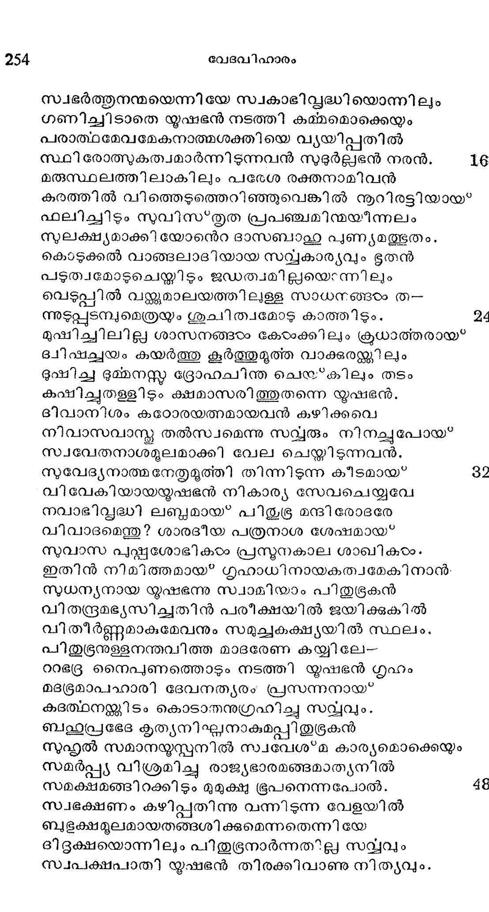
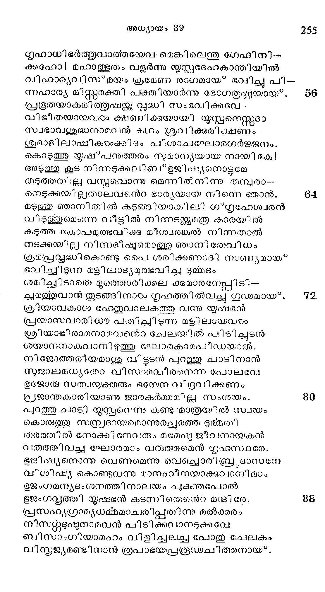
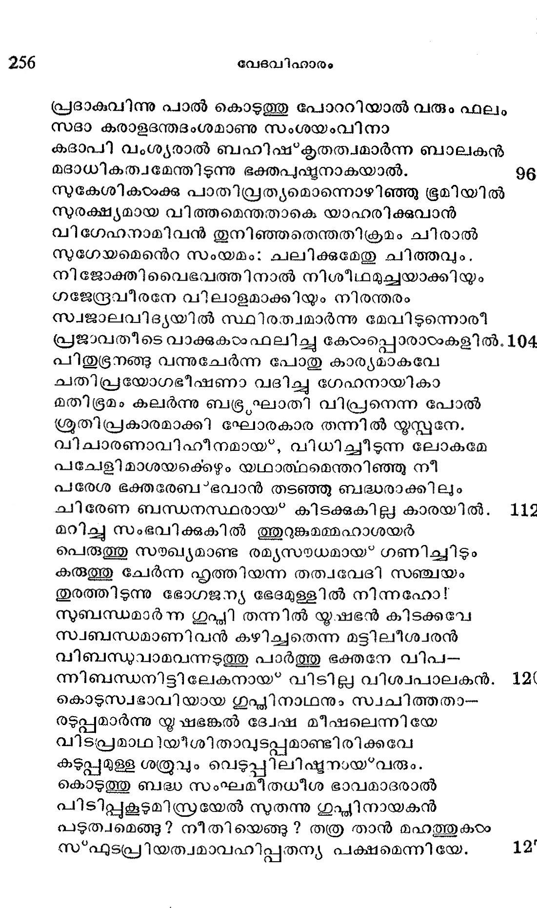

യോസേഫ് സേനാപതിയുടെ വീട്ടിൽ
വൃത്ത൦---പഞ്ചചാമരം
എജിപ*തു രാജനാം ഫറോവിനുള്ള രക്ഷി സേനതൻ
വിജിതചരപ്രഭാവശാലിനാവരകന് മഹാശയന്
പിതുഭൂരനെന്നു പേരു കേട്ട മര്ത്യനങ്ങു യൂസ്സനേ
ഭൂതപ്പണിക്ക നിശ്ചയിച്ചു സ്വന്തമാം നികേതനേ.
തനിക്ക് ദാസ്യവേല നവ്യമെങ്കിലും വിനീതിയാല്
ഇനിപ്പുതന്നെ തോന്നിയത്തൊഴില*ക്കിരുന്നു യൂഷഭന്
കശപ്പുചേര്ന്ന വസ്തവും നിരന്തരം ഭൂജിന്ക്കുകില്
വശപ്പെടുന്നു സാരഘത്തിനൊത്തമട്ടില് മിഷ്ടമായ?. 8
മനോഹരസ്വഭാവിയാ മിവനെറ കമ്മഭാസ്തരന്
ദിനോദയം തുടങ്ങി മദ്ധ്യവാസരാന്തമൊന്നുപോല്
തളര്ന്നിടാതെ വര്ദ്ധമാനമായ*ത്തിളങ്ങി ഗേഹമാം
തുരന്ന പുഷ*കരത്തിലന്നു സല്ഫലാഡ്യമായ്*പ്പരം.
സ്വഭര്ത്തുനന്മയെന്നിയേ സ്വകാഭിപ്ൃദ്ധിയൊന്നിലും
ഗണിച്ചിടാതെ യൂഷഭന് നടത്തി കമ്മമൊക്കെയും
പരാത്ഥമേവമേകനാത്മശക്തിയെ വ്യയിപ്പതില്
സ്ഥി രോത്സുകത്വമാര്ന്നിടുന്നവന് സുടൂര്ല്ലഭന് നരന്. 16
മരുസ്ഥലത്തിലാകിലും പരേശ രക്തനാമിവന്
കരത്തില് വിത്തെടുത്തെറിഞ്ഞുവെങ്കില് നൂറിരട്ടിയായ*
ഫലിച്ചിടും നുവിസ്*തൃത പ്രപഞ്ചമിന്മയിന്നലം
സുലക്ഷ്യമാക്കി യോന്െറ ദാസബാല്യ പുണ്ൃമത്ഭുതം.
കൊടുക്കല് വാങ്ങലാടദിയായ സറ്യവകാര്യവും ഭൂതന്
പടുത്വമോടുചെയ്യിടും ജഡത്വമില്ലയെന്നിലും
വെടുപ്പില് വയ്ക്കുമാലയത്തിലുളള സാധനങ്ങരം ത-
ന്നുടുപ്പുടമ്പുമെത്രയും ശുചി ത്വമോടു കാത്തിടും. 4
മുഷിച്ചിലില്ല ശാസനങ്ങയം കോഠക്കിലും ക്രധാത്തരായ"
ഭ്വീഷച്ചയം കയര്ത്തു കൂര്ത്തുമൂത്ത വാക്കരയ്ക്കിലും
ഭുഷിച്ച ഭമ്മനസ്ത ദ്രോഹചിന്ത ചെയ്*കിലും തടം
കഷിച്ചതള്ളിടും ക്ഷമാസരിത്തുതന്നെ യൃഷഭന്.
ദിവാനിശം കഠോരയത്നമായവന് കഴിക്കവെ
നീവാസവാന്്മ തല്സ്വമെന്നു സവ്വരും നിനച്ചുപോയ*
സ്വവേതനാശമൂലമാക്കി വേല ചെയ്തിടുന്നവന്.
സുവേദ്യനാത്മനേതൃമൂത്തി തിന്നിടുന്ന കീടമായ് 82
വിവേകിയായയഷഭന് നികാര്യ സേവചെയ്യവേ
നവാഭിത്ൃദ്ധി ലബ്ദമായ? പിതുഭ്ര മന്ദി രോഭരേ
വിവാദമെന്തു? ശാരദീയ പത്രനാശ ശേഷമായ*
സുവാസ പുഷ്ണശോഭികംം പ്രനുനകാല ശാഖികാംം.
ഇതിന് നിമിത്തമായ ഗൃഹാധിനായകത്വമേകിനാന്.
സുധന്യനായ യൂഷഭന്നു സ്വാമിയാം പിതുഭ്രകന്
വിതന്ദ്രമഭ്യസിച്ചതിന് പരീക്ഷയില് ജയിക്കുകില്
വിതീര്ണ്ണമാകുമേവനും സമുച്ഛകക്ഷ്യയില് സ്ഥലം.
പിതുഭ്രനുളളനന്തവിത്ത മാദരേണ കയ്യിലേ--
ററഭദ്ര നൈപുണത്തൊടും നടത്തി യൂഷഭന് ഗൃഹം
മദഭ്രമാപഹാരി ദേവനത്യരം' പ്രസന്നനായ*
കുദത്ഥനയ്ണി ടം കൊടാതനുഗ്രഹിച്ചു സവ്വവും.
ബല്ുപ്രഭേദ കൃത്യനിഎ്ലനാകുമപ്പിതുദ്രകന്
സുഹൃല് സമാനയ്സ്്പനില് സ്വവേശ*മ കാര്യമൊക്കെയും
സമര്പ്പയ വിശ്രമിച്ച രാജ്യഭാരമങ്ങമാത്ൃയനില്
സമക്ഷമങ്ങിറക്കിടും മുമുക്ഷ്യ ഭൂപനെന്നപോല്. 48
സാഭക്ഷണം കഴിപ്പതിന്നു വന്നിടുന്ന വേളയില്
ബഭക്ഷമൂലമായതങ്ങശിക്കുമെന്നതെന്നിയേ
ദിദഭുക്ഷയൊന്നിലും പിതുഭ്രനാര്ന്നതില്ല സവ്വും
സ്വപക്ഷപാതി യൂഷഭന് തിരക്കിവാണു നിതൃവും.

ഗൃഹാധിഭര്ത്തുവാത്തയേവ-മെങ്കിലെന്തു ഗേഹിനി.-
ക്കഹോ! മഹാത്ഭുതം വളര്ന്നു യ്ൂസ്റ്റദേഹകാന്തിയില്
വിഹാര്യവിസ*മയം ക്രമേണ രാഗമായ" ഭവിച്ചു പി-
ന്ഹാര്യ മിസ്റ്റരക്തി പക്തിയാര്ന്നു ഭോഗതൃഷ്ണയായ.
പ്രഭുതയാകുമിത്തുഷ്കു വൃദ്ധി സംഭവിക്കവേ
വിഭീതയായവാരം ക്ഷണിക്കയായി യൂസ്പനെസ്സദാ
സ്വഭാവശുദ്ധനാമവന് കഥം ശ്രവിക്കുമിക്ഷണം .
ശുഭാഭിലാഷികംംക്കിദം പിശാച/ഘോരഗര്ജ്ജനം.
കൊടുത്തു യൂഷ*പനുത്തരം നുമാന്യയായ നായികേ!
അടുത്തു കൂട് നിന്നടുക്കലിബഭജിഷ്യനൊട്ടമേ
തടത്തത്ല്ല വസ്മവൊന്നു മെന്നില് നിന്നു തമ്പുരാ--
നെടുക്കയില്ലതാലവ€ന്റ ഭാര്യയായ നിന്നെ ഞാന്.
മടുത്തു ഞാനിതില് കുടുങ്ങിയാകില ഗ*ഗൃഹേശ്വരന്
വിടുത്തുമെന്നെ വീട്ടില് നിന്നടന്ക്കുമത്ര കാരയില്
കടുത്ത കോപമുത്ഭവിക്കു മീശ്വരങ്കല് നിന്നതാല്
നടക്കയില്ല നിന്നഭീഷ്യമൊത്തു ഞാനി തേവിധം
ക്രമപ്രസ്പദ്ധികൊണ്ടു പൈ ശരിക്കണഃദ്ി നാണ്യമായ*
ഭവിച്ചിടുന്ന മട്ടിലാദ്ൃയമുത്ഭവിച്ച ദുമ്മദം
ശമിച്ചിടാതെ മുത്തൊരിക്കല കുമാരമ്േപ്പിടി-
ക്വമത്തുവാന് തുടങ്ങിനാടം ഗൃഹത്തില്വച്ച ഗൂഡമായ.
ക്രിയാവകാശ ഹേതുവാലകത്തു വന്നു നൂഷഭന്
പ്രയാസ്വാരിധ പഠിച്ചിടുന്ന മട്ടിലായവരം
ശ്രീയാഭിരാമനാമവനന്െറ ചേലയില് പിടിച്ചുടന്
ശയാനനാകുവാനിഴുത്തു ഘോരകാമപീഡയാല്.
നിജോത്തരീയമാശു വിട്ടടന് പുറത്തു ചാടിനാന്
സുജാലമധ്യതോ വിസാരവീരനെന്ന പോലവേ
ഭജോരു സത്വയ്യക്തരും ഭയേന വിദ്രവിക്കണം
പ്രജാന്തകാരിയാണു ജാരകര്മ്മമില്ല സംശയം.
പുറത്തു ചാടി യൂസ്കനെന്നു കണ്ടു-മാത്രയില് സ്വയം
കൊരുത്തു സ്സ്രദായമൊന്നുരച്ചരത്ത ഭുമ്മതി
തരത്തില് നോക്കി നേവരും മമേഷ്യ ജീവനായകന്
വരുത്തിവച്ച ഘോരമാം വരുത്തമെന് ഗൃഹസ്ഥരേ.
ഭജിഷ്യനൊന്നു വെണമെന്നു വെല്ചലൊരിബ്രദാസനേ
വിശിഷ്ട കൊണ്ടുവന്നു മാനഹീനയാക്കുവാനിമാം
ഭജംഗമന്യദംശനത്തിനാലയം പുകുന്തപോല്
ഭജംഗവ്കഡത്തി യൃഷഭന് കടന്നി തെന്റ മന്ദിരേ.
പ്രസഹ്ൃഗ്രാമ്ൃയധമ്മമാചരിപ്പതിന്നു മല്ക്കരം
നിസ്റ്റഭൂഷുനാമവന് പിടിക്കവാനടുക്കവേ
ബിസാംഗിയാമഹം വിളിച്ചലചച പോതു ചേലകം
വിസ്പജ്യമണ്ടിനാന് ത്രപാഭയപ്രരൂഡചിത്തനായ.

പ്രദാകുവിന്നു പാല് കൊടുത്തു പോററിയാല് വരും ഫലം
സദാ കരാളടന്തദംശമാണു സംശയംവിനാ
കദാപി വംശ്യരാല് ബഹിഷ്കൃതത്വമാര്ന്ന ബാലകൻ
മദാധികത്വമേന്തിടുന്നു ഭക്തപുഷ്ടനാകയാല്. 96
സുകേശികടംക്ക പാതിവ്രത്യമൊന്നൊഴിഞ്ഞു ഭൂമിയില്
സുരക്ഷ്യമായ വിത്തമെന്തതാകെ യാഹരിക്കുവാന്
വിഗേഹനാമിവന് തുനിഞ്ഞതെന്തതിക്രമം ചിരാൽ
സുഗേയമെനന്െറ സംയമം: ചലിക്കുമേതു ചിത്തവും.
നിജോക്തിവൈഭവത്തിനാല് നിശീഥമുച്ചയാക്കിയ്ം
ഗജേന്ദ്രവീരനേ വിലാളമാക്കിയും നിരന്തരം
സ്വജാലവിദ്ൃയയില് സ്ഥിരത്വമാര്ന്നു മേവിടുന്നൊരി
പ്രജാവതീടെ വാക്കുകഠം ഫലിച്ചു കോഠംപ്പൊരാഠംകളില്. 104
പിതുഭ്രനങ്ങു വന്നുചേര്ന്ന പോതു കാര്യമാകവേ
ചതിപ്രയോഗഭീഷണാ വദിച്ചു ഗേഹനായികാ
മതിഭൂമം കലര്ന്നു ബഭ്ര,ഘാതി വിപ്രനെന്ന പോല്
ശ്രതിപ്രകാരമാക്കി ഘോരകാര തന്നില് യൂസ്പനേ.
വിചാരണാവിഹീനമായ*, വിധിച്ചിടുന്ന ലോകമേ
പചേളിമാശയക്കെഴും യഥാത്ഥമെന്തറിഞ്ഞു നീ
പരേശ ഭക്തരേബ”*ഭവാന് തടഞ്ഞു ബദ്ധരാക്കിലും
ചിരേണ ബന്ധനസ്ഥരായ' കിടക്കുകില്ല കാരയില്. 112
മറിച്ചു സംഭവിക്കുകില് ത്ുറു്കമമ്മഹാശയര്
പെരുത്തു സയഖ്യമാണ്ട രമൃസായധമായ് ഗണിച്ചിടും
കരുത്തു ചേര്ന്ന ഹൃത്തിയന്ന തത്വവേദി സഞ്ചയം
തുരത്തിടുന്നു ഭോഗജന്യ ഭേദമുള്ളില് നിന്നഹോ!
സുബന്ധമാര്ന്ന ഗുപ്മി തന്നില് യൂഷഭന് കിടക്കവേ
സ്വബന്ധമാണി വന് കഴിച്ചതെന്ന മട്ടിലീശ്വരന്
വിബന്ധുവാമവന്നുത്തു പാര്ത്തു ഭക്തനേ വിപ-
ന്നിബന്ധനിട്ടിലേകനായ വിടില്ല വിശ്പപാലകന്. 121
കൊടുസഭാവിയായ ഗുപ്തിനാഥനും സ്വചിത്തതാ-
രടുപ്പമാര്ന്നു യൃഷഭങ്കൽ ദ്വേഷ മീഷലെന്നിയേ
വിടപ്രമാഥിയീശിതാവുടപ്പുമാണ്ടിരിക്കവേ
കടുപ്പമുള്ള ശ്രുവും വെടുപ്പിലിഷ്ടനായ*വരും.
കൊടുത്തു ബദ്ധ സംഘമീതധീശ ഭാവമാദരാല്
പിടിപ്പുകൂടുമിസ്തരയേല് സുതന്നു ഗുപ്ലിനായകന്
പടുത്വമെങ്ങു? നീതിയെങ്ങു ? തത്ര താന് മഹത്തുകരം
സ*ഫുടപ്രിയത്വമാവഹിപ്പതന്യ പക്ഷമെന്നിയേ. 12
